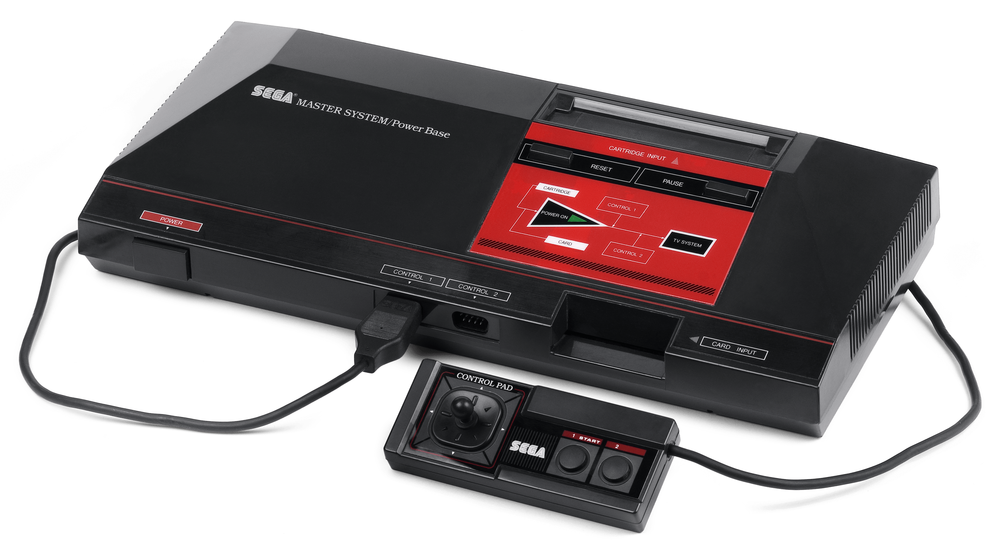
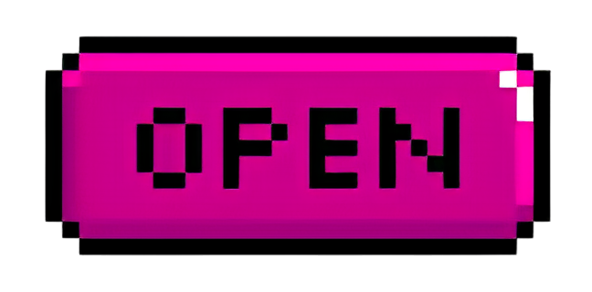
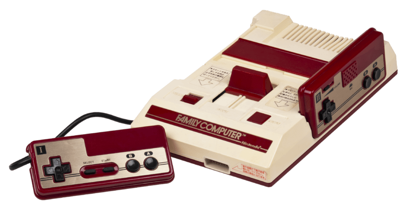
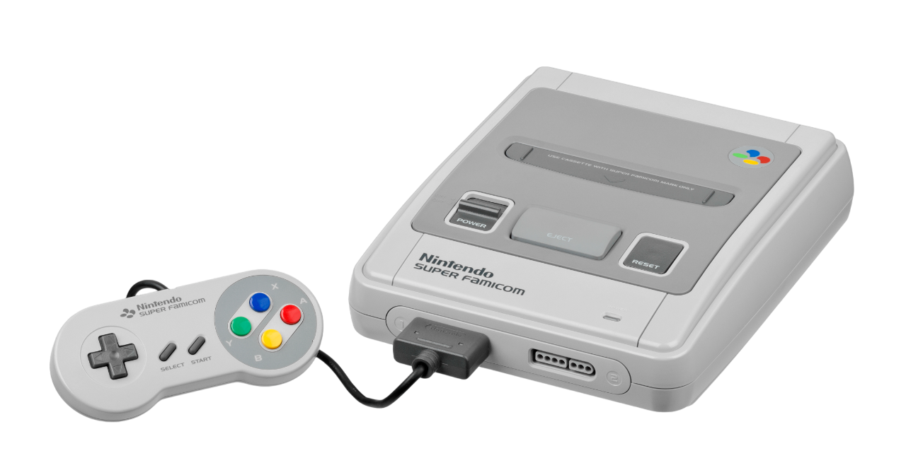

SEGA

Master
Conheça o Sega Master System, o console de 8 bits que marcou uma geração! Lançado em 1985, ele trouxe inovações com slots para cartuchos e Sega Cards, além de acessórios como a Light Phaser e óculos 3D. Experimente a emoção dos clássicos que definiram a era dos videogames. Reviva a nostalgia e mergulhe em horas de diversão com este ícone da Sega!


Nintendo
Famicom
O Nintendo Entertainment System (NES) é o console de 8 bits que redefiniu a indústria dos videogames. Originalmente lançado no Japão como Famicom, o NES se tornou um fenômeno global, resgatando o mercado após o "crash" de 1983. Desfrute dos clássicos que marcaram gerações e experimente a nostalgia de um console que mudou a história dos jogos.

SEGA
Genesis
Conheça o Sega Mega Drive (ou Genesis na América do Norte), o console de 16 bits que dominou a cena! Lançado em 1988, foi o sucessor do Master System e trouxe uma biblioteca de jogos vibrante, incluindo o icônico Sonic the Hedgehog. Com foco em games de ação e uma abordagem mais madura, o Mega Drive se tornou um fenômeno global. Reviva a era de ouro com este clássico!

Nintendo
Super
Famicom
Reviva a magia dos anos 90 com o Super Nintendo Entertainment System (SNES)! Lançado em 1990, este console de 16 bits revolucionou os games com gráficos e sons avançados. Apesar da concorrência, o SNES se tornou o mais vendido de sua era, com um catálogo de jogos que marcou gerações. Mergulhe na nostalgia e descubra por que o SNES ainda é um ícone!